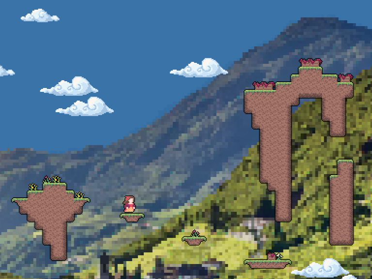

I am a software developer with a foundation in application and web development. I enjoy using programming to bring my ideas to life and solve problems through hands-on development. I look forward to applying these skills to help others turn their ideas into working software.
Featured Project
Novara's Ascent
Novara's Ascent is a 2D platformer developed using Python and Pygame. The game features a custom-built engine that handles physics, collision detection, and rendering, along with a level editor used to create and modify game environments.
